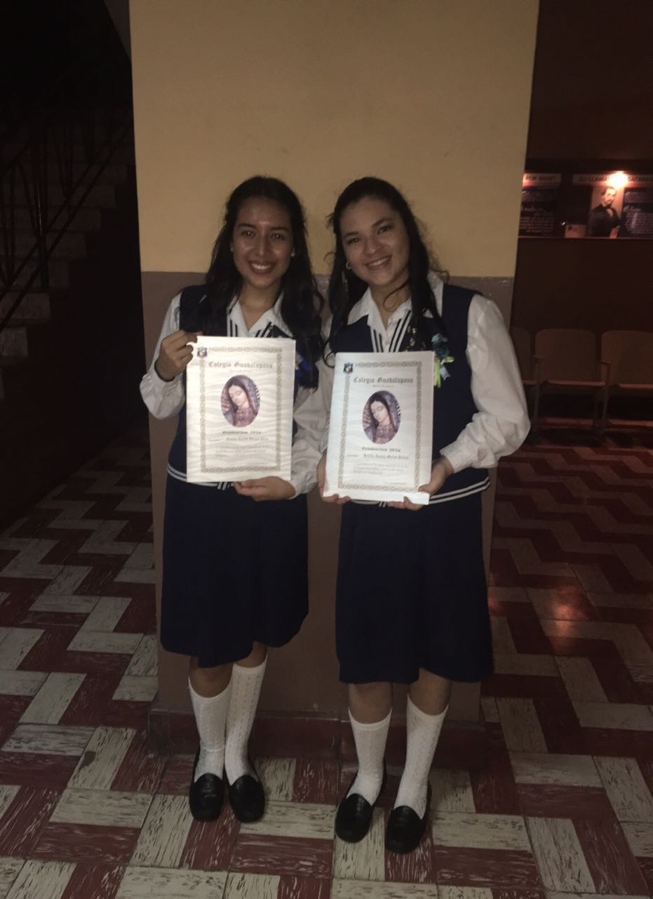

Mi autobiografia
Capitulo 1 -Introduccion
- Mi nombre es Jeniffer Merino,tengo dos hermanos y una hermana. Naci el 11 de julio en san salvador
- Mi nombre me lo puso mi padre
- Describiria mi personalidad como timida,pero independiente
Capitulo 2 - Familia/Amigos
- Mi familia siempre ha sido muy unida, me paresco a mi abuela
- Me gustan mucho los animales, tengo 2 gatos de mascota
- Gran parte de mi familia vive en diferentes paises
- Conoci a i mejor amiga en el colegio y nos conocemos desde sexto grado
